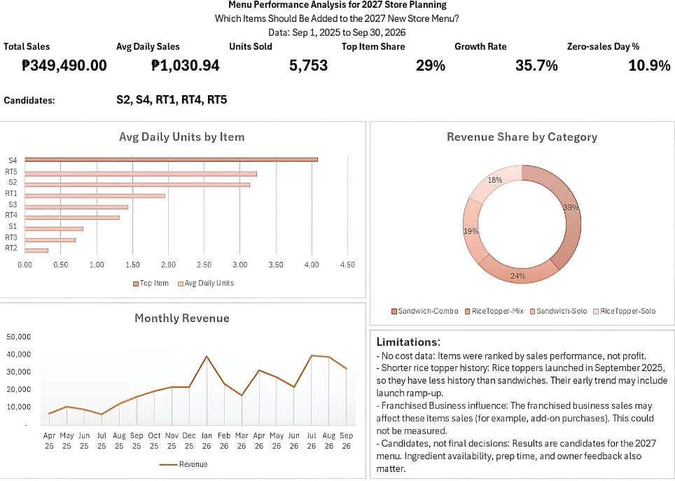
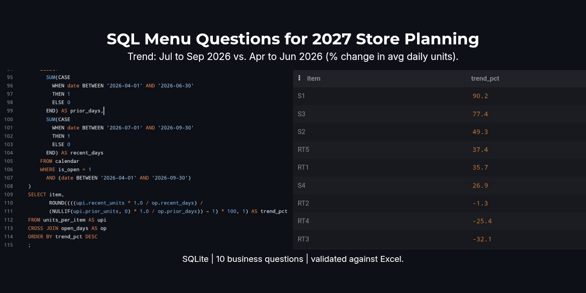

Clean records.
Clear numbers.
Hi, I'm JR, an aspiring data analyst. I use Excel, SQL and Data Visualization tools to answer business questions with clear and honest analysis.
Whenever I see a stat or a ranking, I can't help asking what's behind it. After a volleyball game I've just watched, I check the numbers and wonder why this skill department dipped or who should start next game. I now bring that same habit to business data.
Featured project
A 3-part analysis of 13 months of daily sales to help choose items for the new store planned to open in 2027.
Data note: Figures are scaled to protect the business owner's financial information. Rankings, trends and shares reflect the real patterns.
1. Menu Performance Analysis
Excel (functions only)

Cleaned and checked the data, then ranked sandwiches and rice toppers on average daily units, trend and consistency. Compared add-on and overload value across items. Built a dashboard with KPIs, candidates and 3 charts.
Complete · View on GitHub2. SQL Menu Questions
SQL (SQLite)

10 queries covering sales by category, top items, trend, consistency, zero-sale days and add-on value. Results are cross-checked against the Excel calculations.
Complete · View on GitHub3. Interactive Dashboard
Looker Studio, Google Sheets
An interactive version of the analysis with date, category and item filters.
In progressKey findings from Project 1
- Top candidates: S4 and S2 for sandwiches and RT5, RT1, and RT4 for rice toppers.
- S4 Sandwich-Combo led with 4.1 average daily units.
- Sandwich-Combo made up 39% of revenue.
- Solo vs. Combo (Sandwich): Combos made up ~60% of sandwich units sold.
- Overload Topper (RT5) vs. Solo Toppers (RT1-RT4): Overload Topper sold 202% more than the average of Solo Toppers.
Results are candidates, pending margin review, owner feedback, prep time and ingredient availability.
Limitations I state up front
- Items were ranked by sales performance, not profit.
- Rice toppers launched in September 2025, so they have less history than sandwiches.
- The franchised business sales may affect the items sales. This could not be measured.
- Sales figures are scaled for confidentiality.
Skills
- Excel
- SQL
- Looker Studio
- Google Sheets
- Data Analysis
- Data cleaning
- Dashboards
- Business insights
Contact
Open to entry-level data analyst roles.